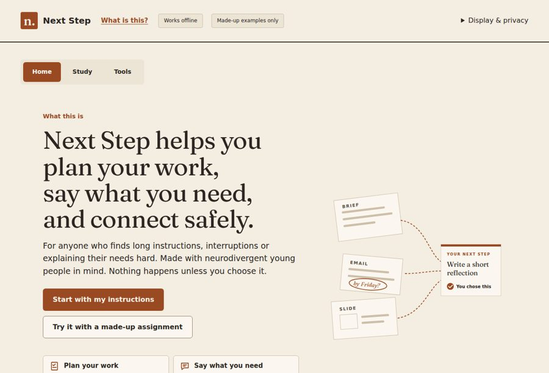
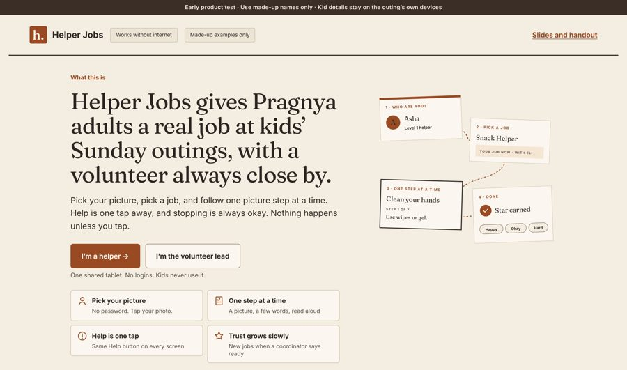

Chapter 4 · Into design · Tools
Don’t guess someone’s state. Make every step work in any state.
Chapter 2 showed that state changes what gets through. Chapter 3 showed that reading it from outside is unreliable. So these apps keep each step small, say it aloud, and make it easy to stop and come back. Nothing happens until the person taps.
Two working apps
Both follow the same rules: one step on the screen, big type, a picture, read aloud, and only made-up people in the examples.
By Amishi Mehta
Next Step
For anyone who finds long instructions, interruptions or explaining their needs hard. Made with neurodivergent young people in mind.
What it does: turns a long brief into one next step, practises words for asking for help, and keeps a note of where to restart. Open Next Step →
Family project for Pragnya
Helper Jobs
Gives neurodivergent adults a real job at kids’ Sunday outings, with a volunteer always close by.
What it does: picture steps read aloud in English, Hindi or Spanish, and Help that reaches the lead’s phone in about a second. Open Helper Jobs →
The apps
Real screens from both apps.

Next StepPlan your work, say what you need, and connect safely.
Helper JobsPick your picture, pick a job, one step at a time. One picture stepA few words, a picture of the real place, and Read aloud.
One picture stepA few words, a picture of the real place, and Read aloud.
The story on a phone
The phone tour tells the same five chapters, one screen at a time, in the same design as the apps.
Careful claims
These are early test versions with made-up people in every example. They have not been tested in a formal study, and they do not diagnose or treat anything. A usability study is planned as experiment 5.
What we still don’t know: whether these designs actually help the people they are for. That is the last of the five experiments. Chapter 5 →